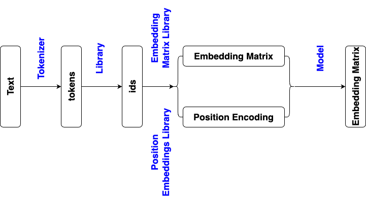

from transformers import DistilBertTokenizerFast, DistilBertModel
import torch
# load tokenizer and model
tokenizer = DistilBertTokenizerFast.from_pretrained('distilbert/distilbert-base-uncased')
model = DistilBertModel.from_pretrained('distilbert/distilbert-base-uncased')
# input text
text = "I've been waiting for a HuggingFace course my whole life."
# convert text to tokens, each token to an id in token library
inputs = tokenizer(text, return_tensors='pt', truncation=True, padding=True) # 16 tokens, 16 ids including [CLS] and [SEP]
with torch.no_grad():
outputs = model(**inputs)
embedding_matrix = outputs.last_hidden_state # 1*16*768, 1 document, 16 tokens, 1*768 vector for each token
# option 1, use the embedding vector of [CLS]
embedding = embedding_matrix[0, 0] # 1*768
# option 2, average pooling
embedding = embedding_matrix.mean(dim=1) # 1*768
# option 3, max pooling
embedding = embedding_matrix.max(dim=1) # 1*768
from transformers import AutoTokenizer, AutoModel
tokenizer = AutoTokenizer.from_pretrained('distilbert/distilbert-base-uncased')
model = AutoModel.from_pretrained('distilbert/distilbert-base-uncased')
text = "I've been waiting for a HuggingFace course my whole life."
inputs = tokenizer(text, return_tensors='pt')
with torch.no_grad():
outputs = model(**inputs)
embedding_matrix = outputs.last_hidden_state
from transformers import pipeline
embedding_pipeline = pipeline('feature-extraction', tokenizer = 'distilbert/distilbert-base-uncased', model = 'distilbert/distilbert-base-uncased')
text = "I've been waiting for a HuggingFace course my whole life."
outputs = embedding_pipeline(text) # 1*768
import torch
from transformers import GPT2Tokenizer, GPT2Model
# Load pre-trained GPT-2 model and tokenizer
model_name = "gpt2"
tokenizer = GPT2Tokenizer.from_pretrained(model_name)
model = GPT2Model.from_pretrained(model_name)
# Example sentence to embed
text = "I've been waiting for a HuggingFace course my whole life."
# Tokenize and prepare inputs
inputs = tokenizer(text, return_tensors="pt") # 14 tokens
# Get hidden states from GPT-2
with torch.no_grad():
outputs = model(**inputs, output_hidden_states=True) # 1*14*768
embedding_matrix = outputs.last_hidden_state # 1*14*768, 1 document, 14 tokens, 1*768 vector for each token
from transformers import AutoTokenizer, AutoModel
import torch
tokenizer = AutoTokenizer.from_pretrained('openai-community/gpt2')
model = AutoModel.from_pretrained('openai-community/gpt2')
text = "I've been waiting for a HuggingFace course my whole life."
inputs = tokenizer(text, return_tensors='pt')
with torch.no_grad():
outputs = model(**inputs)
embedding_matrix = outputs.last_hidden_state # 1*14*768, 1 document, 14 tokens, 1*768 vector for each token
from transformers import GPT2Tokenizer, GPT2Model
from transformers import pipeline
model_name = "openai-community/gpt2"
embedding_pipeline = pipeline('feature-extraction', tokenizer = model_name, model = model_name)
# tokenizer = GPT2Tokenizer.from_pretrained(model_name)
# model = GPT2Model.from_pretrained(model_name)
# embedding_pipeline = pipeline('feature-extraction', tokenizer = tokenizer, model = model)
text = "I've been waiting for a HuggingFace course my whole life."
outputs = embedding_pipeline(text) # 1*768, the embedding of [CLS] in embedding matrix
from transformers import T5Tokenizer, T5Model
import torch
# Load the T5 tokenizer and model
model_name = "google-t5/t5-base"
tokenizer = T5Tokenizer.from_pretrained(model_name)
model = T5Model.from_pretrained(model_name)
text = "I've been waiting for a HuggingFace course my whole life."
# Tokenize the input text
inputs = tokenizer(text, return_tensors="pt") # 18 tokens
# Pass input through T5 to get encoder outputs
with torch.no_grad():
outputs = model.encoder(**inputs)
embedding_matrix = outputs.last_hidden_state # 1*18*768, 1 document, 18 tokens, 1*768 vector for each token